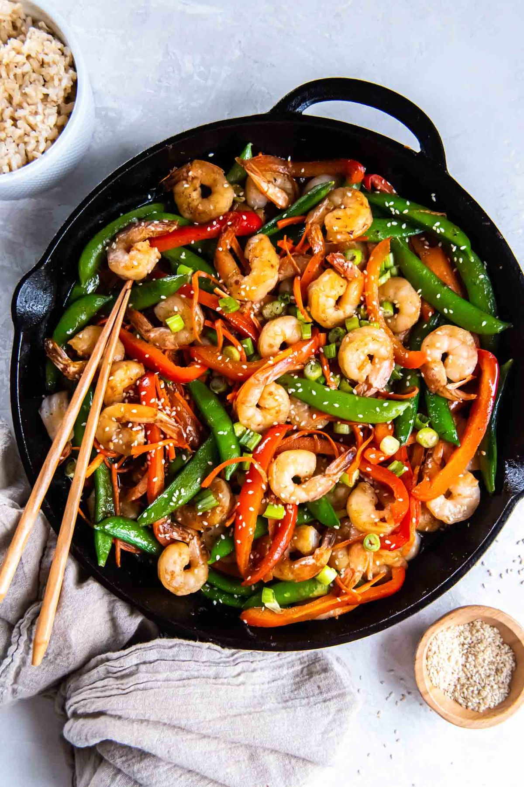

Shrimp Stir Fry

- Meal
- Dinner
- Serves
- 6
- Protein
- shrimp
- Cook
- stovetop · 20 min active / 30 min total · easy
- Make-ahead / leftovers
- yes (sauce and chopped veg a day ahead) / yes
- Mediterranean
- yes
- WW tier
- light
- Status
- Trying out (probation)
Allergy: Contains fish or shellfish — not for a fish-allergic eater; same-sauce chicken is in this card
Kristine's Kitchen shrimp stir fry: shrimp, carrots, red bell pepper, and sugar snap peas in a honey-ginger-garlic soy sauce over rice. Thirty minutes, one skillet, kid-friendly sweet-salty sauce.
Ingredients
Sauce
- 1/2 cup water or low-sodium chicken broth
- 1/2 cup low-sodium soy sauce
- 3 Tbsp honey
- 1 Tbsp toasted sesame oil
- 3 Tbsp minced fresh ginger (jar is fine)
- 6 garlic cloves, minced
- 1 Tbsp cornstarch
- Pinch red pepper flakes (adults' plates only, optional)
Stir fry
- 3 1/2 Tbsp olive or avocado oil, divided
- 2 lb large shrimp, peeled and deveined (thawed)
- 3 carrots, julienned (or a bag of matchstick carrots)
- 1 1/2 red bell peppers, thinly sliced
- 12 oz sugar snap peas
- 6 green onions, chopped
- 6 cups cooked brown rice
- Sesame seeds (optional)
Fish-free fallback (same sauce)
- 1 boneless chicken breast, cut into bite-size pieces
Method
- Whisk all sauce ingredients together.
- The fish-free chicken first: heat 1 tsp oil in the skillet over medium-high; cook the fish-free chicken 5–6 minutes until 165°F. Set it on its own plate.
- Add 1 1/2 Tbsp oil; stir-fry the carrots, peppers, and snap peas 2–3 minutes until crisp-tender.
- Whisk the sauce again and pour it in; simmer 1 minute until glossy and thick. Stir in the green onions.
- Spoon the fish-free share of veggies and sauce over the fish-free chicken.
- Sear the shrimp in a second skillet with the remaining oil, ~2 minutes per side, in batches (or push the veg to the edges and cook them in the middle of the same pan after the fish-free portion is out). Toss with the vegetables and sauce.
- Serve over brown rice with sesame seeds.
Notes
- Scaled ×1.5 from Kristine's 1 1/2 lb shrimp / serves 4 (rounded to a 2 lb bag).
- Fish-free method tweak: Kristine sears the shrimp first and builds the sauce in the same pan. Here the chicken goes first and the shrimp only meets the pan after the fish-free share is pulled.
- Sauce has no oyster or fish sauce — Fish-allergy safe as written.
- Kid heat: red pepper flakes moved to adults' plates.
- Not Ground Turkey Stir Fry / Chinese Cashew Chicken — shrimp and snap peas in a honey-ginger sauce.
- Mediterranean ✓: olive oil (Kristine cooks in olive/avocado oil), seafood, vegetables, brown rice — 4 of 4 by the house Mediterranean test, even with a sweet soy sauce. light.